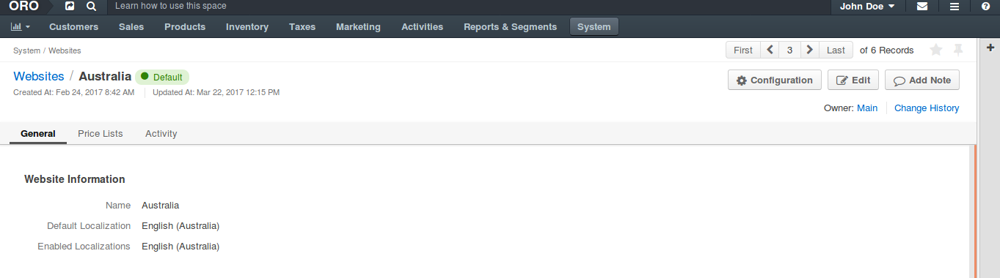

Set a Website as Default¶
OroCommerce redirects anonymous users to the default website. Logged in customers users may be redirected too when their current website is not identified.
To set a website as default:
Navigate to System > Websites using the main menu.

Click on the website you would like to use as default (e.g. Australia).

On the website details page, click Set Default.
Now the website is marked as default and will be used for the anonymous access.
